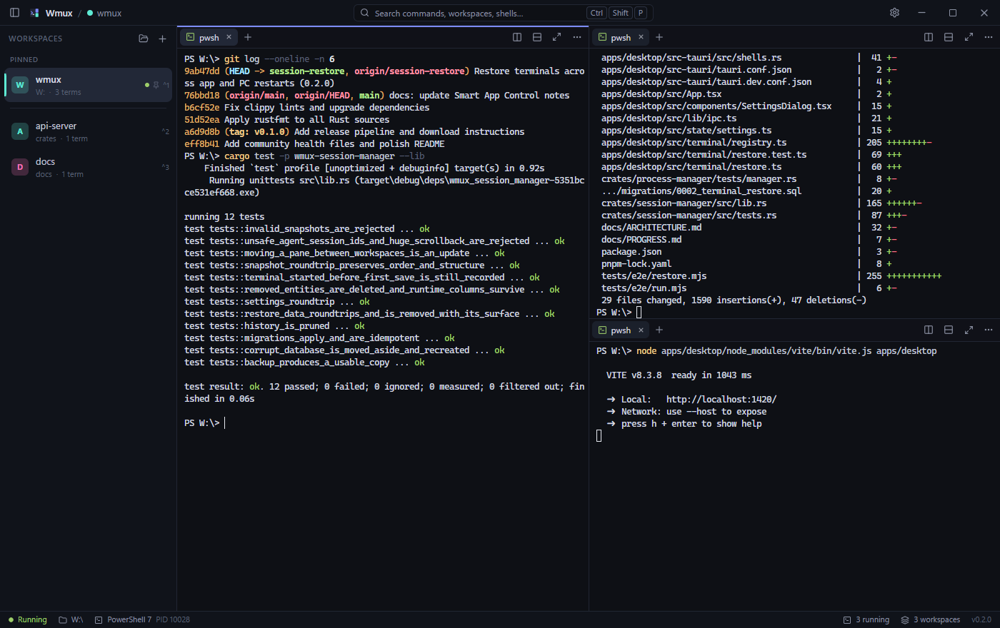
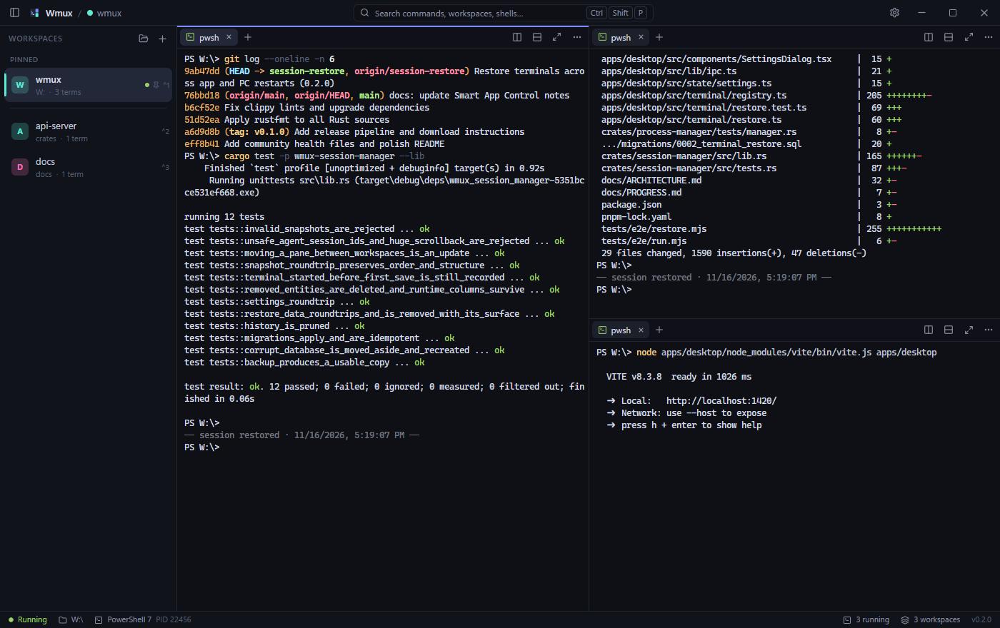
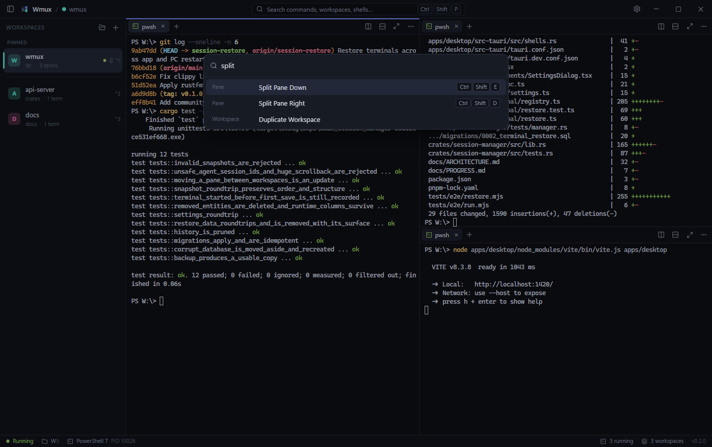
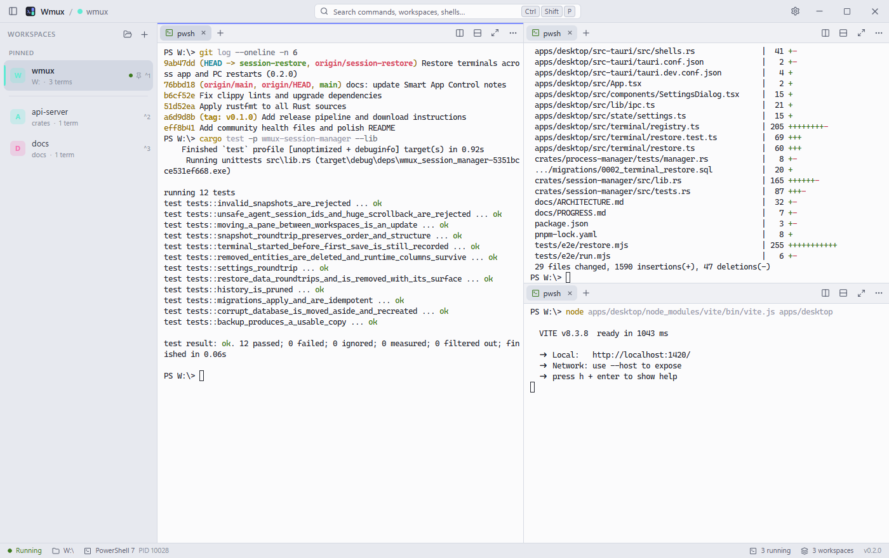

Your terminals, right where you left them.
Wmux is a Windows-native workspace for terminals and AI coding agents. Split panes, real shells, and one promise: close the app or shut down your PC, and your work comes back.
v0.2.0 · Windows 10 and 11, x64 · Free and open source (MIT)

One window for everything you run
A project usually means a shell, a dev server, a test watcher and an agent or two. Wmux keeps each project's set together and lets you switch between them with one key.
Workspaces
One per project, each with its own folder, shell, startup commands and environment variables. Pin, color, reorder, duplicate.
Split panes and tabs
Split right or down as deep as you like, drag the dividers, maximize one pane, move focus by direction. Every pane holds tabs.
Real Windows shells
PowerShell 7, Windows PowerShell, cmd, WSL distributions and Git Bash, each in a real ConPTY session. Add your own shell profiles.
Session restore
Layout, working directories and terminal text come back after a restart. Agent sessions resume and running commands start again.
Command palette
Every action is one search away, and every shortcut can be changed. Shell keys like Ctrl C and Ctrl D are never taken.
Fast and small
A Rust backend and GPU-accelerated terminal rendering. It uses the WebView2 runtime already built into Windows, so the download stays small.
Shut down. Come back. Keep going.
A terminal's process cannot outlive a reboot. So Wmux saves what it needs every few seconds and, when you open it again, puts each terminal back the way it was.
-
Your terminal text is backThe screen and scrollback of every terminal, with a marker showing where the last session ended.
-
Claude Code and Codex pick up the conversationWmux remembers which agent session ran in which terminal and resumes it there, in the same folder.
-
What was running starts againA dev server or watcher that was still running is started again. A command that had already finished is not repeated.
Re-running commands needs PowerShell. Each part can be turned off in Settings. How it works

Find any action by typing
Press Ctrl Shift P and type a few letters. Split a pane, switch workspace, change shell, open settings. The palette shows each action's shortcut, so you learn them as you go.
Rebind anything under Settings → Keyboard.

Light, dark, and your accent
Follow the Windows theme or pick one. Choose an accent color, the terminal font and size, cursor style and scrollback length. Settings apply to open terminals at once.

The ones you will use every day
Wmux uses Ctrl Shift combinations so the keys your shell relies on keep working.
| Action | Shortcut |
|---|---|
| Command palette | Ctrl Shift P |
| New workspace | Ctrl Shift N |
| Open a folder as a workspace | Ctrl Shift O |
| Switch to workspace 1–9 | Ctrl 1 … 9 |
| Split right / split down | Ctrl Shift D / E |
| New terminal tab | Ctrl Shift T |
| Move focus between panes | Ctrl Alt Arrow |
| Maximize the focused pane | Ctrl Shift Enter |
| Search terminal output | Ctrl Shift F |
Download v0.2.0
Pick the installer unless you have a reason not to. It installs for your user only and does not need administrator rights.
| File | Use it if |
|---|---|
Wmux_x64-setup.exe | Recommended. Per-user installer, no admin rights needed. |
Wmux_x64_en-US.msi | You deploy software with MSI or Group Policy. |
Wmux-portable-x64.zip | You want no installation: unzip and run Wmux.exe. |
SHA256SUMS.txt so you can verify the file you downloaded.
Requires Windows 10 (1809 or later) or Windows 11 on x64, and the WebView2 runtime (built into Windows 11; the installer adds it on Windows 10). Install guide
What works today, and what is next
Wmux is in early development. This list is kept honest: “planned” means not built yet.
- shippedTerminals, workspaces, splits and tabs
- shippedSession restore with agent resume and command re-run
- plannedDrag and drop for panes and tabs
- plannedAgent status and notifications when an agent needs you
- plannedBrowser panes next to your terminals
- plannedGit panel, port monitoring and workspace search
- planned
wmuxCLI and a scripting API - plannedSigned builds, auto-update and ARM64
Try it on your next project
Free, open source, and a small download. Your current terminal will still be there if you change your mind.